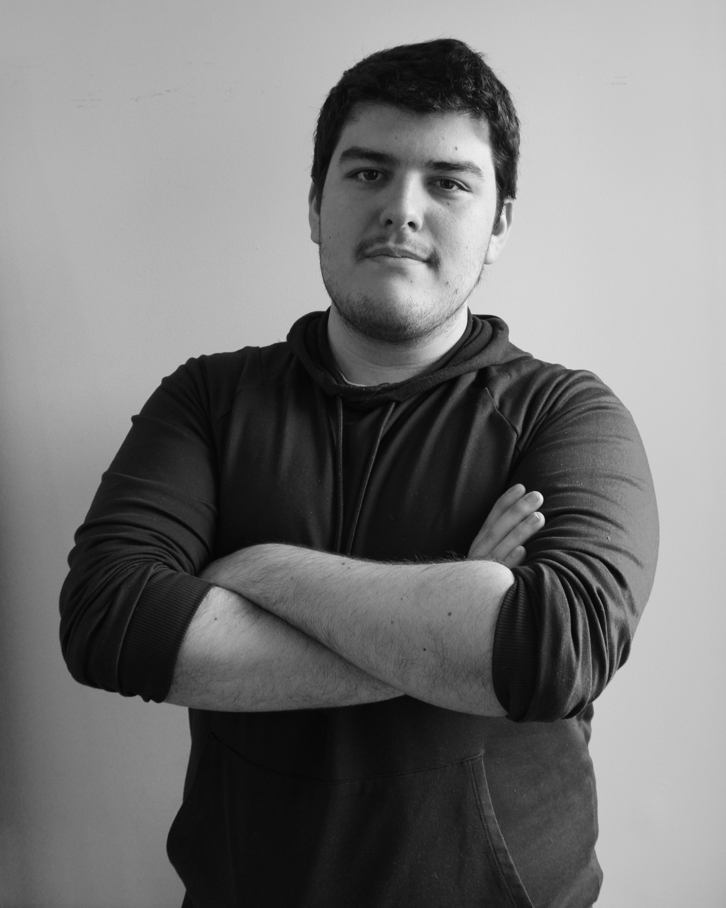
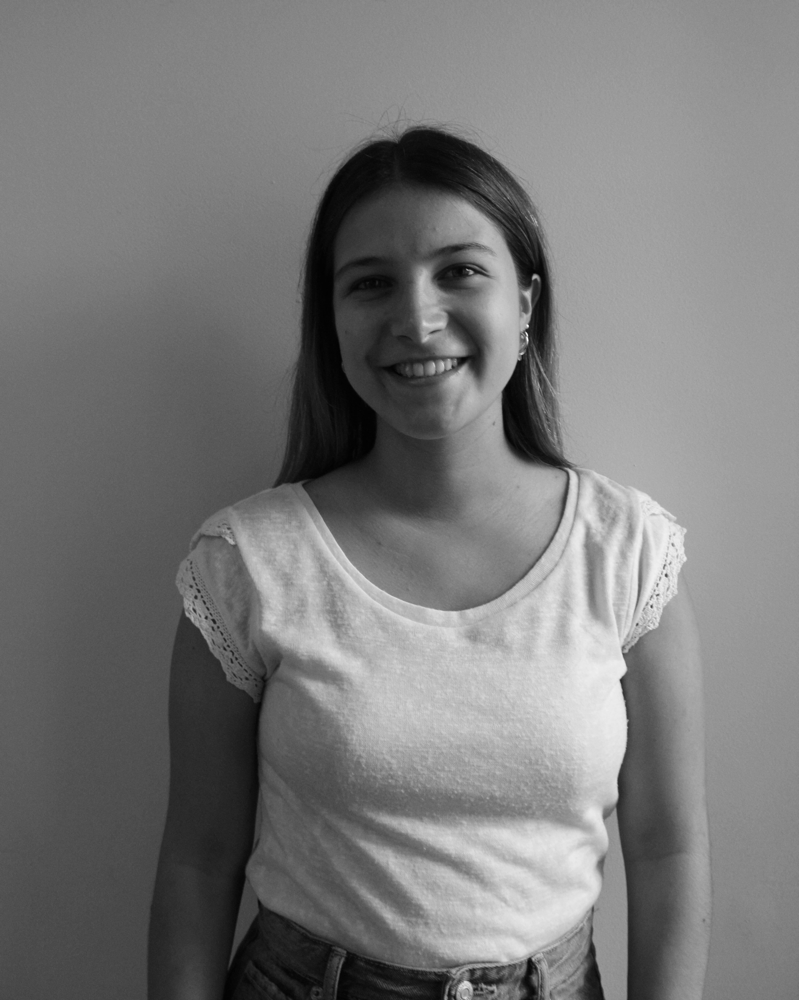
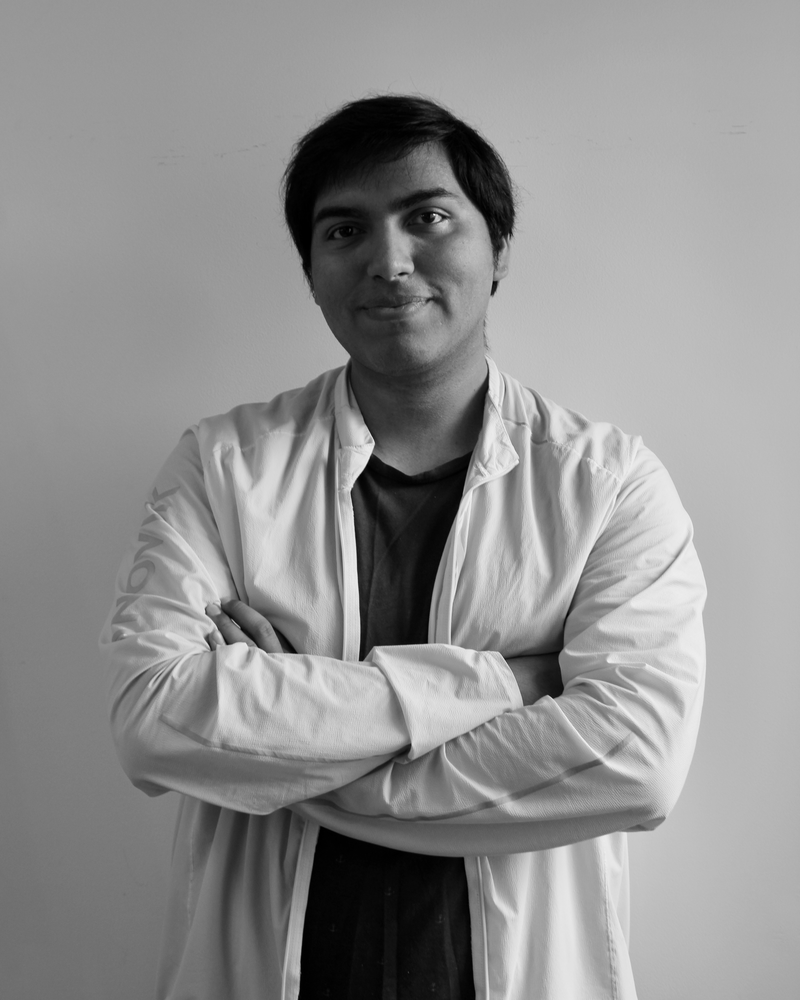
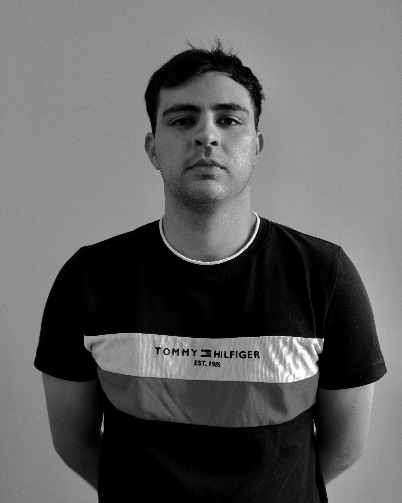
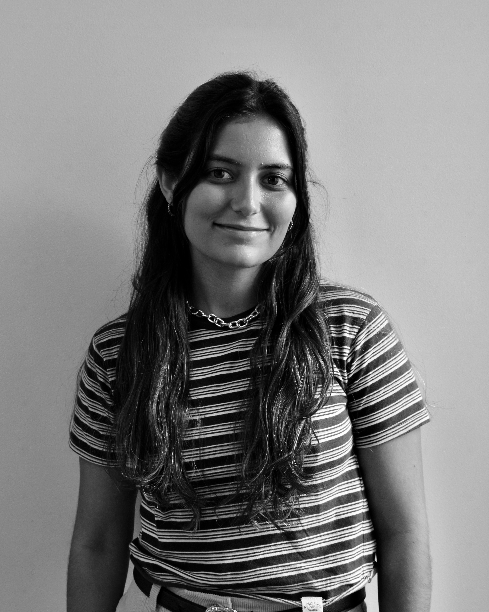

Felipe Capó Curbelo
Soy Felipe Capó, tengo 22 años y trabajo de periodista. Mi interés por el periodismo se inició en
el mundo audiovisual gracias a las películas y los videojuegos. A través de estos medios
encontré una pasión por querer encontrar y contar historias en mí como en los demás.

María Ianina Coutinho Magnone
Mi nombre es María Ianina Coutinho Magnone, actualmente tengo 22 años. El periodismo permite la
posibilidad de dar vida a historias reales, esas que nos rodean en lo cotidiano y que a menudo
pasan desapercibidas. Estas historias no solo conectan y unen a las personas, sino que también
nos ayuda a comprender mejor el mundo que compartimos.

Rodolfo García Torres
Mi nombre es Rodolfo García Torres, tengo 25 años y me encanta compartir historias. Para mí, las
palabras sirven como herramienta para compartir nuestras ideas y describir hasta el pensamiento
más abstracto. Por eso, me apasiona escribir y espero compartir mi experiencia con el mundo.

Bruno Masello Azeves
Soy Bruno Masello y tengo 22 años. Mi obsesión por el fútbol me permite disfrutar todo lo que lo
rodea. Transmitir las emociones que este deporte genera es mi vocación.

Julieta Vargas Rodríguez
Mi nombre es Julieta Vargas, tengo 22 años. Descubrí mi pasión por el periodismo a través del
mundo de la redacción, y más tarde lo disfruté también dentro del área audiovisual. Mi
motivación por contar historias es lo que hace que quiera seguir en este camino por muchos años
más.

María Catalina Zabala Dopico
Soy Catalina Zabala, tengo 22 años. Mi pasión por las letras y la historia me permiten entender
que todo está escrito. Que las claves del ser humano se encuentran ahí, esperando a ser
desenterradas. El periodismo lo saca a la superficie, y lo comparte con la comunidad. Hace
universal el acceso a la verdad, una que ya está escrita.